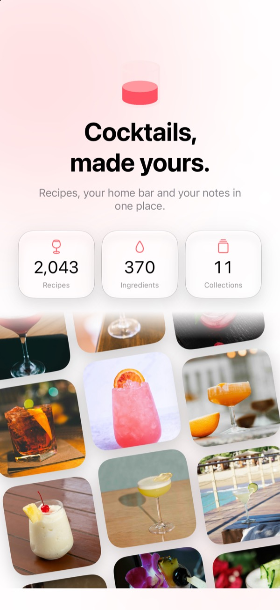
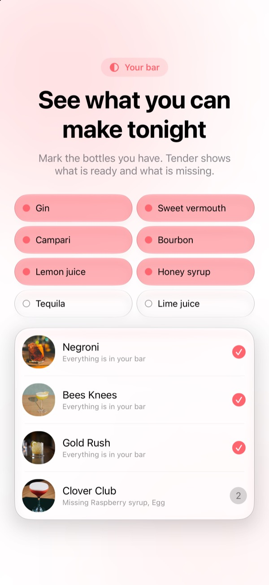
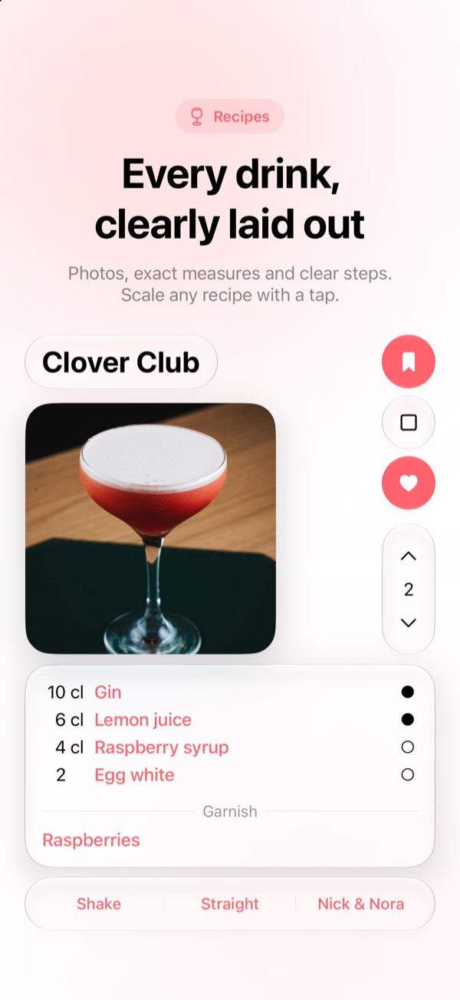

Cocktails, made yours.
Find your next drink, see what you can make with the bottles you have, and keep your favorite recipes in one place. For iPhone and iPad.



Find the right drink
Search recipes, ingredients and sources. Read clear measures and steps, and see where each recipe comes from.
Your home bar
Mark the bottles you have. Tender shows what is ready to mix and what is missing.
Favorites and lists
Save drinks for later, mark what you've tried and plan an evening with recipes, groceries and notes.
Scale any recipe
Change servings, switch between cl and oz, and see the estimated volume and strength.
Make it yours
With Tender Pro, add your own recipes, photos and ingredients, build collections and save filters.
Private by design
No account and no tracking. Your recipes stay on your devices and sync through your own iCloud.
The recipe library, favorites, lists and home bar are free. Tender Pro is an optional in-app purchase.